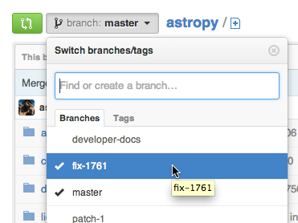
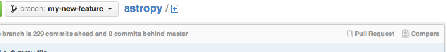

Contributing Code: a Worked Example#
Template
Template for further usage, template belong to astropy.
This example is based on fixing Issue 1761 from the list of astropy issues on GitHub. It resulted in pull request 1917.
The issue title was “len() does not work for coordinates” with description
“It would be nice to be able to use len on coordinate arrays to know how
many coordinates are present.”
This particular example was chosen because it was tagged as easy in GitHub; seemed like the best place to start out!
Before you begin#
Make sure you have created a development environment for astropy as described in Creating a development environment. The rest of this tutorial assumes you have done that and are working in your local copy of the astropy git repository.
Grab the latest updates to astropy#
A few steps in this tutorial take only a single command. They are broken out separately to outline the process in words as well as code.
Inform your local copy of astropy about the latest changes in the development
version with:
git fetch upstream --tags
Set up an isolated workspace#
Make a new git branch for fixing this issue and switch to the branch:
git switch -c fix-1761 upstream/main
Switch to your astropy development environment:
conda activate astropy-dev
Install our branch of
astropyalong with all development dependencies in this environment with:python -m pip install --editable ".[dev_all]"
If installation fails, try to upgrade pip using python -m pip install pip
--upgrade command. It is also a good practice to occasionally keep your conda
up-to-date by running conda update conda --name base when prompted to do so.
Test first, please#
It would be hard to overstate the importance of testing in Astropy. Tests are what gives you confidence that new code does what it should and that it does not break old code.
You should at least run the relevant tests before you make any changes to make sure that your Python environment is set up properly.
The first challenge is figuring out where to look for relevant tests. Issue
1761 is a problem in the ~astropy.coordinates package, so the tests for
it are in astropy/coordinates/tests. The rest of astropy has a similar
layout, as described at Testing guidelines.
Run the current tests in that directory with:
pytest astropy/coordinates/tests
If the bug you are working on involves remote data access, you need to run
the tests with an extra flag, i.e., pytest astropy/coordinates/tests --remote-data.
In the event where all the tests passed with the bug present, new tests are needed to expose this bug.
A subpackage organizes its tests into multiple test modules; e.g.:
$ ls astropy/coordinates/tests
test_angles.py
test_angular_separation.py
test_api_ape5.py
test_arrays.py
...
Issue 1761 affects arrays of coordinates, so it seems sensible to put the
new test in test_arrays.py. As with all of the steps, when in doubt,
please ask on the |astropy-dev mailing list|.
The goal at this point may be a little counter-intuitive: write a test that we
know will fail with the current code. This test allows astropy to check,
in an automated way, whether our fix actually works and to prevent
regression (i.e., make sure future changes to code do not break our fix).
Looking over the existing code in test_arrays.py, each test is a function
with a name that starts with test_. An appropriate place to add the test is
after the last test function in the file.
Give the test a reasonably clear name; e.g., test_array_len. The
easiest way to figure out what you need to import and how to set up the test
is to look at other tests. The full test is in the traceback below and in
pull request 1917.
Write the test, then see if it works as expected; remember, in this case we
expect it to fail without the patch from pull request 1917.
Running pytest astropy/coordinates/tests/test_arrays.py would give the expected failure;
an excerpt from the output is:
================= FAILURES =============================
______________ test_array_len __________________________
def test_array_len():
from .. import ICRS
input_length = 5
ra = np.linspace(0, 360, input_length)
dec = np.linspace(0, 90, input_length)
c = ICRS(ra, dec, unit=(u.degree, u.degree))
> assert len(c) == input_length
E TypeError: object of type 'ICRS' has no len()
astropy/coordinates/tests/test_arrays.py:291: TypeError
Success!
Add this test to your local git repo#
Keep git commits small and focused on one logical piece at a time. The test we just wrote is one logical change, so we will commit it. You could, if you prefer, wait and commit this test along with your fix.
For this tutorial, we will commit the test separately. If you are not sure what to do, ask on |astropy-dev mailing list|.
Check what was changed#
We can see what has changed with git status:
$ git status
On branch fix-1761
Your branch is up-to-date with 'astropy/main'.
Changes not staged for commit:
(use "git add <file>..." to update what will be committed)
(use "git checkout -- <file>..." to discard changes in working directory)
modified: astropy/coordinates/tests/test_arrays.py
no changes added to commit (use "git add" and/or "git commit -a")
There are two bits of information here:
one file changed; i.e.,
astropy/coordinates/tests/test_arrays.pythis file has not been added to git’s staging area yet, so it is listed under
Changes not staged for commit.
Use git diff to see what changes have been made:
$ git diff
diff --git a/astropy/coordinates/tests/test_arrays.py b/astropy/coordinates/test
index 2785b59..7eecfbb 100644
--- a/astropy/coordinates/tests/test_arrays.py
+++ b/astropy/coordinates/tests/test_arrays.py
@@ -278,3 +278,14 @@ def test_array_indexing():
assert c2.equinox == c1.equinox
assert c3.equinox == c1.equinox
assert c4.equinox == c1.equinox
+
+
+def test_array_len():
+ from .. import ICRS
+
+ input_length = 5
+ ra = np.linspace(0, 360, input_length)
+ dec = np.linspace(0, 90, input_length)
+
+ c = ICRS(ra, dec, unit=(u.degree, u.degree))
+
+ assert len(c) == input_length
A graphical interface to git makes keeping track of these sorts of changes even easier; see this list of GUI Clients if you are interested. You may also find it helpful to use a full featured Interactive Development Environment (IDE) like PyCharm or Visual Studio Code. Both of these IDEs have built-in git support.
Stage the change#
git requires you to add changes in two steps:
stage the change with
git add ...; this adds the file to the list of items that will be added to the repo when you are ready to commit.commit the change with
git commit ...; this actually adds the changes to your repo.
These can be combined into one step (not recommended); the advantage of doing it in two steps
is that it is easier to undo staging than committing. As we will see later,
git status even tells you how to do it.
Staging can be very handy if you are making changes in a couple of different places that you want to commit at the same time. Make your first changes, stage it, then make your second change and stage that. Once everything is staged, commit the changes as one commit.
In this case, first stage the change:
git add astropy/coordinates/tests/test_arrays.py
You get no notice at the command line that anything has changed, but
git status will let you know:
$ git status
On branch fix-1761
Your branch is up-to-date with 'astropy/main'.
Changes to be committed:
(use "git reset HEAD <file>..." to unstage)
modified: astropy/coordinates/tests/test_arrays.py
Note that git helpfully includes the command necessary to unstage the change if you want to.
Commit your change#
Next, we will commit the test without the fix:
$ git commit -m "Add test for array coordinate length (issue #1761)"
[fix-1761 dd4ef8c] Add test for array coordinate length (issue #1761)
1 file changed, 12 insertions(+)
Commit messages should be concise. Including the GitHub issue number allows GitHub to automatically create links to the relevant issue.
Use git status to get a recap of where we are so far:
$ git status
On branch fix-1761
Your branch is ahead of 'astropy/main' by 1 commit.
(use "git push" to publish your local commits)
nothing to commit, working directory clean
In other words, we have made a change to our local copy of astropy but we
have not pushed (transferred) that change to our GitHub account.
Fix the issue#
Write the code#
Now that we have a test written, we will fix the issue. A full discussion of
the fix is beyond the scope of this tutorial, but the fix is to add a
__len__ method to astropy.coordinates.SphericalCoordinatesBase in
coordsystems.py (the code has since been refactored, if you try to look
for it). All of the spherical coordinate systems inherit from
this base class and it is this base class that implements the
__getitem__ method that allows indexing of coordinate arrays.
See pull request 1917 to view the changes to the code.
Test your change#
There are a few levels at which you want to test:
Does this code change make the test we wrote succeed now? Check by running
pytest astropy/coordinates/tests/test_arrays.py. In this case, yes!Do the rest of the coordinate tests still pass? Check by running
pytest astropy/coordinates/. In this case, yes, we have not broken anything!Do all of the astropy tests still succeed? Check by running
pytestfrom the top-level directory. This may take a while depending on the speed of your system. Success again!
Note
Tests that are skipped or xfailed are fine. A fail or an error is not fine. If you get stuck, ask on |astropy-dev mailing list| for help!
Stage and commit your change#
Add the file to your git repo in two steps: stage, then commit.
To make this a little different than the commit we did above, make sure you
are still in the top level directory and check the git status:
$ git status
On branch fix-1761
Your branch is ahead of 'astropy/main' by 1 commit.
(use "git push" to publish your local commits)
Changes not staged for commit:
(use "git add <file>..." to update what will be committed)
(use "git checkout -- <file>..." to discard changes in working directory)
modified: astropy/coordinates/coordsystems.py
no changes added to commit (use "git add" and/or "git commit -a")
Note that git knows what has changed no matter what directory you are in (as long as you are in one of the directories in the repo, that is).
Stage the change with:
git add astropy/coordinates/coordsystems.py
For this commit, it is helpful to use a multi-line commit message that will automatically close the issue on GitHub when this change is accepted. The snippet below accomplishes that in bash (and similar shells):
$ git commit -m"
> Add len() to coordinates
>
> Closes #1761"
[fix-1761 f196771] Add len() to coordinates
1 file changed, 4 insertions(+)
Another option for multi-line commit message is to use a
Git GUI Client or to run
git commit without a message to get prompted by an editor.
The message after committing should look like this when you inspect with
git log:
Add len() to coordinates
Closes #1761
If the commit message does not look right, run git commit --amend.
If you still run into problems, please ask about fixing it at
|astropy-dev mailing list|.
At this point, none of the Astropy maintainers know anything about your changes.
We will take care of that in a moment with a “pull request”, but first, see Stop and think: Any more tests or other changes?.
Stop and think: Any more tests or other changes?#
It never hurts to pause at this point and review whether your proposed changes are complete. In this case, there are some more tests that could be included, such as:
What happens when
len()is called on a coordinate that is not an array?Does
len()work when the coordinate is an array with one entry?
Both of these are mentioned in pull request 1917, so it does not hurt to check them. In this case, they also provide an opportunity to illustrate a feature of the pytest framework.
The second case is easier, so it will be handled first following the development cycle we used above:
Make the change in
astropy/coordinates/tests/test_arrays.pyTest the change
The test passed; but rather than committing this one change, we will also implement the check for the scalar case.
One could imagine two different desirable outcomes here:
len(scalar_coordinate)behaves just likelen(scalar_angle), raising aTypeErrorfor a scalar coordinate.len(scalar_coordinate)returns 1 since there is one coordinate.
If you encounter a case like this and are not sure what to do, ask. The best place to ask is on GitHub on the page for the issue you are fixing.
Alternatively, make a choice and be clear in your pull request on GitHub what you chose and why; instructions for that are below.
Testing for an expected error#
In this case, we opted for raising a TypeError, because
the user needs to know that the coordinate they created is not going to
behave like an array of one coordinate if they try to index it later on.
The pytest framework makes testing for an exception relatively
easy; you put the code you expect to fail in a with block:
c = ICRS(0, 0, unit=(u.degree, u.degree))
with pytest.raises(TypeError):
len(c)
A test like this can be added test_array_len in test_arrays.py.
In your own work, you may also choose to put that into a new test function,
if you wish.
Aside: Python lesson–let others do your work#
The actual fix to this issue was very, very short. In coordsystems.py, two
lines were added:
def __len__(self):
return len(self.lonangle)
lonangle contains the Angle objects that represent longitude (sometimes this
is an RA, sometimes a longitude). By simply calling len() on one of the
angles in the array you get, for free, whatever behavior has been defined in
the Angle class for handling the case of a scalar.
Adding an explicit check for the case of a scalar here would have the very
big downside of having two things that need to be kept in sync: handling of
scalars in Angle and in coordinates.
Commit any additional changes#
Continue to follow the development cycle above for other files that you need to modify, including changelog (see Edit the changelog) and documentation, as needed:
Check that all
astropytests still pass; see Test your changegit statusto see what needs to be staged and committedgit add ...to stage the changesgit commit ...to commit the changesgit logto inspect the change history
The git commands, without their output, are:
git status
git add astropy/coordinates/tests/test_arrays.py
git commit -m "Add tests of len() for scalar coordinate and length 1 coordinate"
git log
Push your changes to your GitHub fork of astropy#
Use this command to push your local changes out to your copy of astropy
on GitHub before asking for the changes to be reviewed:
git push origin fix-1761
Propose your changes as a pull request#
This stage requires going to your GitHub account and navigate to your copy
of astropy; the url will be something like
https://github.com/your-user-name/astropy.
Once there, select the branch that contains your fix from the branches dropdown:

After selecting the correct branch, click on the “Pull Request” button, as shown below:

Name your pull request something sensible. Include the issue number with a
leading # in the description of the pull request so that a link is
created to the original issue, as stated in astropy’s pull request template.
Please see pull request 1917 for the pull request showcased in this tutorial.
Edit the changelog#
Keeping the list of changes up to date is nearly impossible unless each contributor makes the appropriate updates as they propose changes.
Create a file docs/changes/coordinates/<PULL REQUEST>.feature.rst, where
<PULL REQUEST> is the pull request number (1917 for this example). The
content of this file should summarize what you did. For writing changelog
entries, you do not need to know much about the markup language being used
(though you can read as much as you want about it at the Sphinx primer); look
at other entries and emulate.
For this issue, the file would contain:
Implemented ``len()`` for coordinate objects.
Putting len() in double-backtick makes that text render in a monospaced
font.
Commit your changes and push#
You can use git status as above or jump right to staging and committing:
git add docs/changes/coordinates/<PULL REQUEST>.feature.rst
git commit -m "Add changelog entry"
git push
Revise and push as necessary#
You may be asked to make changes in the discussion of the pull request. Make those changes in your local copy, commit them to your local repo, and push them to GitHub. GitHub will automatically update your pull request.